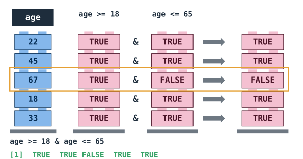
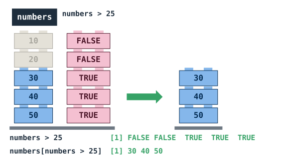

var1 <- 2 * 4
var1[1] 8In Chapter 1 you set up RStudio, and in Chapter 2 you built your first Quarto document. Now you turn to the language in which you write everything in this book: R. Variables, functions, data types and the pipe operator are the building blocks you use in the following chapters to import, transform, analyse and visualise datasets.
SPSS syntax is essentially a command language with a fixed vocabulary. In R, you write functions yourself, combine values into vectors and vectors into datasets. This takes a little effort at the start, and it pays off later: you use the same building blocks from your first steps through to your final thesis.
Research journal: Where are you in your mini study? You set up the IDE in Chapter 1 and learned the reporting workflow in Chapter 2. Now you learn the elements of the language that you will soon use to recode survey items, build scales and fit models. The examples in this chapter are deliberately taken from the social and political sciences. From Chapter 4 onwards you apply the same operations to real variables from the German General Social Survey (ALLBUS).
# comments.==, &, %in%, …).NA) and exclude them from calculations.|>.|> and the older %>% from magrittr.<-
A variable stores a value. In R, you assign values with the assignment arrow <-:
var1 <- 2 * 4
var1[1] 8var1 (left) is the variable name; 2 * 4 (right) is the expression whose result (8) is stored.
So R first calculates 2 * 4 and stores the result under the name var1 in the Environment (Figure 3.1). Wherever var1 appears after that, R uses the value 8. In the figures, a value is a brick and a name is a dark name tag; Section 3.5 explains this visual language.
var1 <- 2 * 4 stores the result 8 under the name var1 in the environment. After that, var1 prints the value 8.
If you put the assignment in brackets, R also prints the result in the console:
(var2 <- 2 * 4)[1] 8Caution: <- instead of =. You may know = as the assignment operator from other programming languages. R accepts it in many contexts, but the idiomatic operator is <-. The reason is that R uses = inside function calls for arguments (mean(x = data)). If you keep <- strictly for assignment and = for arguments, you avoid subtle errors.
Keyboard shortcut for <-: option + - (macOS) or alt + - (Windows/Linux).
R runs code from top to bottom, line by line. What a variable contains therefore depends on which lines have run before:
x <- 5
y <- x + 2
x <- 10
y[1] 7y is 7, although x is 10 at the end. In line 2, R calculates x + 2 with the value that x has at that moment and stores the result 7 under y. R does not remember the calculation itself, so line 3 does not change y (Figure 3.2). The chunks of a Quarto document also run from top to bottom when you render it.
x; y keeps the value 7.
Stop and think. What value does a have after these three lines: a <- 3, a <- a + 1, a <- a * 2?
a <- 3
a <- a + 1
a <- a * 2
a[1] 8a is 3 at first, 4 after the second line and 8 after the third. To the right of the arrow, R uses the value that a has at that moment; on the left, it stores the result under the same name and so replaces the old value.
A variable name must start with a letter and may then contain letters, numbers, dots (.) and underscores (_). Spaces are not allowed.
For readable code, social scientists usually follow one of two conventions:
snake_case: everything in lower case, words joined by underscores, as in mean_age. This is the tidyverse standard.camelCase: the first word in lower case, each further word starting with a capital letter, as in meanAge. Common in Stata and JavaScript.Choose one and stick to it. This book uses snake_case.
# Good
mean_age
factor_scale
islamophobia_scale
# Bad (inconsistent)
Mean.age
meanAge_new
# Not allowed (space)
mean age“Everything that exists is an object. Everything that happens is a function call.” — John Chambers
A function is a named tool that you pass arguments to and that returns a result. A generic function call looks like this:
function_name(arg1 = value1, arg2 = value2, ...)function_name: what the function does.arg1, arg2: settings that control how it does its work.arg1 = value1) or by position.Some arguments have default values: you do not need to specify them, because the most common value is already set.
seq(from = 1, to = 10, by = 2) # by name[1] 1 3 5 7 9seq(1, 10, 2) # by position, same result[1] 1 3 5 7 9Both calls return the same five numbers. Figure 3.3 shows the first one: the values of the three arguments go into seq(), and out come the numbers 1, 3, 5, 7 and 9. In the figures, functions are marked in green and arguments in orange.
seq() receives three arguments and returns five numbers.
If you have forgotten the arguments of a function, ?function_name (for example ?seq) opens its help page in RStudio. Inside the brackets, Tab opens a drop-down list of all arguments.
c(), seq() and round()
| Function | What it does |
|---|---|
c(...) |
creates a vector from the arguments (combine) |
seq(from, to, by) |
creates a sequence |
1:5 |
regular sequence (1, 2, 3, 4, 5) |
rep(x, times, each) |
repeats x
|
head(x, n) |
the first n elements |
tail(x, n) |
the last n elements |
length(x) |
number of elements |
round(x, digits) |
rounds numbers |
[1] 1 2 3seq(from = 1, to = 10, by = 2)[1] 1 3 5 7 9rep(x = 0, times = 5)[1] 0 0 0 0 0[1] 1.2 2.3 4.0In the last line, round() receives two arguments (Figure 3.4). x is a required field: without x, round() does not know what to round. digits has the default value 0, so if you leave it out, round() rounds to whole numbers. Here you set digits to 1.
round() as the fields of a form: x must be filled in, digits is prefilled with 0 and is overwritten with 1 here.
Stop and think. What do round(digits = 1, x = 1.222) and round(1, 1.222) return?
With names, the order does not matter: R puts 1.222 into the field x and 1 into digits, and the result is 1.2. Without names, the position counts. In the second call, 1 ends up in the first field, x, and 1.222 in digits, so R rounds the number 1 and returns 1.
You will need three groups of operators again and again.
+, -, *, /, ^ and %%
| Operator | What it does |
|---|---|
+ |
addition |
- |
subtraction |
* |
multiplication |
/ |
division |
^ |
exponentiation |
%% |
modulo (remainder) |
==, !=, <, > and %in%
They return a logical value, TRUE or FALSE.
| Operator | What it does |
|---|---|
== |
equal |
!= |
not equal |
<, <=
|
less than (or equal) |
>, >=
|
greater than (or equal) |
%in% |
contained in a set |
Caution: == is not =. For comparisons you always use == (a double equals sign). A single = is reserved for function arguments: mean(x = data) sets x and does not compare anything.
&, | and !
They combine logical values.
| Operator | What it does |
|---|---|
& |
AND |
| |
OR |
! |
NOT |
A small example:
age <- c(22, 45, 67, 18, 33)
age > 30[1] FALSE TRUE TRUE FALSE TRUEage >= 18 & age <= 65[1] TRUE TRUE FALSE TRUE TRUE[1] TRUE FALSE FALSE FALSE TRUEFigure 3.5 shows the third line brick by brick. age >= 18 is TRUE for all five values, age <= 65 for all except 67. & combines the two towers of logical values row by row and gives TRUE only where both bricks are TRUE.
& combines the two towers row by row.
You will need these operators all the time in Chapter 4, when you select cases with filter().
In R, everything is an object: a value, a dataset, a statistical model, even a function. The following sections introduce the data types you need most for social science work.
To show you what R does with your data, the figures present data as building blocks (Figure 3.6). A single value is a brick, and its colour shows the data type. Several bricks stacked on top of each other form a vector, that is, a tower; towers of equal height side by side on a baseplate form a dataset. An empty, dashed brick stands for a missing value, and a yellow sticker for a value label (Chapter 4). In the code, objects are dark, functions green and arguments orange.
![Legend of the visual language. A blue brick with 1 stands for a number (numeric), a purple brick with “Anna” for text (character), a pink brick with TRUE for a logical value (logical), an empty dashed brick for a missing value (NA), and a blue brick with a yellow sticker MALE for a number with a value label. A tower of three blue bricks with the name tag numbers, labelled Name, is a vector. Two towers, gender and age, on a baseplate are a dataset; a marked row is a case, a tower is a variable. Below, code blocks: numbers dark as Object, round green as Function, digits = 1 orange as Argument.](Bilder/figuren/en/k03-legende.svg)
[ ]
A vector is a one-dimensional collection of values of the same data type. You will see three types most often:
Figure 3.7 shows the three vectors as towers. Each tower has only one colour, because a vector contains values of a single data type. The first value is at the top; the missing value in flags is an empty brick.
Caution: Use TRUE/FALSE instead of T/F. The short forms work, but they can be overwritten, which makes them error-prone in practice. Always write TRUE and FALSE in full.
With indices you access individual elements:
numbers[1] # first element[1] 1numbers[2:4] # second to fourth[1] 2 3 4numbers[-1] # all except the first[1] 2 3 4 5Instead of positions, you can also index with conditions. With this Boolean indexing, you pass a logical vector (TRUE/FALSE) of the same length, and R keeps only the TRUE positions:
numbers <- c(10, 20, 30, 40, 50)
numbers > 25 # returns a TRUE/FALSE vector[1] FALSE FALSE TRUE TRUE TRUEnumbers[numbers > 25] # keeps only values > 25[1] 30 40 50numbers[!is.na(numbers)] # keeps only non-NA values[1] 10 20 30 40 50numbers > 25 gives a tower of logical values that is as tall as numbers. In numbers[numbers > 25], R places it next to numbers like a stencil and keeps only the bricks next to a TRUE (Figure 3.8).
numbers > 25 selects the bricks. The grey bricks next to FALSE are dropped.
This logic is exactly what tidyverse functions such as filter() (Chapter 4) do internally. Once you are confident with it, you will understand filter(allbus, age > 30) straight away.
If you write numbers * 2 in R, the operation is applied to each element, and you get c(20, 40, 60, 80, 100) back. This is called vectorisation and is one of R’s most useful features. You hardly ever need to write a for loop to apply an operation to many values.
If you combine two vectors of different lengths, R silently repeats the shorter one (recycling):
Figure 3.9 shows which values R repeats: for numbers * 2, R uses the same 2 for each of the five bricks; for c(1, 2, 3, 4) + c(10, 20), it uses 10 and 20 a second time.
R does this on purpose, but it is a typical beginners’ trap that leads to wrong results. If you are not sure, use length() to check that both vectors have the same length.
What happens if you mix different data types in c()? R then converts all values to a common type. This coercion happens without a warning:
In the first vector, TRUE becomes 1 and FALSE becomes 0; the result is numeric. In the second, everything becomes text, including the number and the logical value. R always chooses the type that can hold all values, in the order logical, numeric, character (Figure 3.10). It does not work the other way round: "Anna" cannot be converted into a number. Because every column of a dataset is a vector, each column also has exactly one data type.
![Two examples. On the left a mixed tower of 1, TRUE and FALSE; after an arrow a blue tower of 1, 1 and 0, labelled numeric, below it c(1, TRUE, FALSE) and the output [1] 1 1 0. On the right a mixed tower of 1, “Anna” and TRUE; after an arrow a purple tower of “1”, “Anna” and “TRUE”, labelled character, below it c(1, “Anna”, TRUE) and the output [1] “1” “Anna” “TRUE”. Next to it, under the heading Type order, the order from top to bottom: logical, arrow, numeric, arrow, character.](Bilder/figuren/en/k03-rangfolge.svg)
Stop and think. What does c(TRUE, "yes") return, and what data type does the result have?
c(TRUE, "yes")[1] "TRUE" "yes" Both values become text, "TRUE" and "yes". The vector is character, because character comes after logical in the order.
factor(), levels() and fct_relevel()
A factor is a vector with a fixed set of categories, its levels, set with the argument levels. You use factors for categorical variables such as gender or education. Why not simply use a character vector? There are three reasons:
[1] male female male non-binary
Levels: male female non-binarylevels(gender)[1] "male" "female" "non-binary"Figure 3.11 shows what is inside gender: internally, R stores a number for each value, here 1, 2, 1, 3, and levels defines which category each number stands for. The first level, male, is the reference category.
gender: internally, R stores the numbers 1 to 3, and levels assigns the categories to them in a fixed order. The first level is the reference.
Stop and think. How does R order the levels of factor(c("low", "high", "medium")) if you leave out levels?
With relevel() (base R) or forcats::fct_relevel() (tidyverse) you change the order afterwards. forcats is part of the tidyverse and provides a whole set of tools for factors (fct_recode(), fct_lump(), fct_reorder()); you will use them for the graphics in Chapter 6.
haven_labelled vs. factor
When you import data from SPSS (Chapter 4), you get columns of type <haven_labelled>. Such a column is a numeric vector that carries the labels as additional information; R does not treat it as a factor. With to_label() (mariposa) you convert it into a classic factor when you need one.
tibble(), $ and [[ ]]
A tibble is the tidyverse’s modern form of the data frame: a table with rows (cases) and columns (variables). You create one with tibble():
# A tibble: 4 × 2
gender age
<fct> <dbl>
1 male 34
2 female 41
3 male 28
4 non-binary 52A tibble is a baseplate with towers of equal height (Figure 3.12). Each column is a tower with one data type, and each row is a case, here one respondent.
respondents as a baseplate: two towers (variables) and four rows (cases).
You access a single column with $ or [[]]:
respondents$age[1] 34 41 28 52respondents[["age"]][1] 34 41 28 52respondents[1, "age"] # first row, column "age"# A tibble: 1 × 1
age
<dbl>
1 34$ and [[ ]] return the same column. The difference lies in how you use them:
$age is more compact and ideal for the interactive console and for scripts.[["age"]] accepts the column name as a string. You need this when the column name is stored in a variable (column <- "age"; respondents[[column]]).In practice, you import ready-made datasets from SPSS, Stata or Excel files (see Chapter 4). You will rarely build a tibble yourself, except for small demonstrations.
list()
A list can hold objects of different types and different lengths. In R, the results of statistical analyses are usually lists: a regression result contains coefficients, residuals, model fit and so on. You will rarely need to create lists yourself, but you will often need to read them:
[1] 0.42result$conf_int[1][1] 0.31A list is a box with compartments (Figure 3.13). Each compartment has a name and can hold values of a different type and length. result$conf_int[1] accesses the value in two steps: $conf_int takes the tower out of its compartment, and [1] takes the first brick from that tower.
result as a box with four compartments. result$conf_int[1] first takes the tower out of the compartment conf_int and then its first value.
NA, is.na() and na.rm
In real datasets, individual values are often missing: a respondent skipped a question, a measurement was invalid, someone refused to answer. R codes this with a special value: NA (not available).
x <- c(1, 2, NA, 4, 5)
x[1] 1 2 NA 4 5is.na(x) # which elements are NA?[1] FALSE FALSE TRUE FALSE FALSESPSS distinguishes system-missing (an empty field) from user-missing (for example “no answer” as the code -9). By default, R has only a generic NA. When you import an SPSS file, however, mariposa keeps the user-missing codes as tagged NA, so you can look up the reason a value is missing at any time. The English edition of the ALLBUS does not declare these codes in the file, so you declare them with set_na() when you read it in (Chapter 4).
Calculations with NA give NA. This is intended: the mean of “1, 2, ?, 4, 5” is in fact unknown.
To make functions such as mean() and sd() calculate a result anyway, you pass na.rm = TRUE:
Figure 3.14 shows the two calls to mean(). With the empty brick in the tower, mean(x) itself returns NA. With na.rm = TRUE, mean() leaves out the missing value and averages the remaining four: (1 + 2 + 4 + 5) / 4 = 3.
x with one missing value. mean(x) gives NA, mean(x, na.rm = TRUE) gives the mean of the four values that are present.
Caution: NA as a result is not an error. If mean(data$age) suddenly returns NA, R gives no error message. It simply goes on calculating and prints NA. Among beginners, this is the most common “my output looks strange” problem. Two checks help:
The fix: add na.rm = TRUE to the calculation, or exclude the missing cases explicitly with filter(!is.na(age)).
R lets you nest functions inside each other, so that the output of one function becomes the input of the next:
This works, but the more steps you nest, the harder the code is to read. You have to read it from the inside out, the opposite of the way you normally read. The pipe operator solves this problem. A pipe chains function calls one after the other instead of nesting them. R has two variants; this book uses the native pipe |>.
|>
With the native pipe, you write the same pipeline step by step, from left to right instead of from the inside out:
[1] 1.1 1.2 1.3Read it like a sentence: “Take numbers, then round to 1 decimal place, then show the first 3.”
Figure 3.15 shows what happens: the pipe puts the result on the left into the first field of the function on the right. numbers ends up in the first argument of round(), and the result of round() in the first argument of head(). The other arguments, digits = 1 and n = 3, stay in the brackets.
Stop and think. How do you write sqrt(sum(c(9, 16))) as a pipe?
The keyboard shortcut for the pipe is cmd/ctrl + shift + M. In RStudio, tick Use native pipe operator under Tools → Global Options → Code so that the shortcut inserts |> instead of %>%.
By default, |> passes the value as the first argument of the next function. If it should go somewhere else, you use the placeholder _, available since R 4.2. It must be used as a named argument:
allbus |>
lm(islamophobia ~ age, data = _)Most tidyverse functions do not need this, because they take the dataset as their first argument anyway.
%>% from magrittrYou will see the pipe %>% (from the tidyverse package magrittr) everywhere in the R world: in tutorials, in Stack Overflow answers and inside many R packages. %>% and |> work almost identically:
Both work in tidyverse code and give the same results. This book uses |> throughout, because it is part of the language itself (no package needed) and slightly faster. If you see %>% in other people’s code, that is no problem.
%>% is different
The magrittr pipe has a placeholder . that you can put in any position: x %>% lm(y ~ ., data = .). Here only the dot after data = is the placeholder; the dot in y ~ . belongs to the formula and stands for all other variables in the dataset. The native _ must be named. With most tidyverse functions you do not need a placeholder, because the first argument is always the dataset.
magrittr also provides further operators: %$%, %T>% and %<>%. They used to be needed now and then (for example to pass pipes through plotting functions). This book does not use them anywhere; mariposa functions all take the data as their first argument and work well with pipes.
Here is an excerpt from the actual data preparation pipeline in Chapter 5 (Section 5.9). It shows what pipes are really useful for:
allbus <- read_spss("ALLBUS2023.sav") |>
set_na(-56, -55, -54, -53, -51, -50, -42, -41,
-33, -32, -15, -11, -10, -9, -8, -7, -6) |>
mutate(
mm02r = rec(mm02, rules = "rev"),
mm05r = rec(mm05, rules = "rev")
) |>
mutate(
islamophobia = row_means(pick(mm01, mm02r, mm03, mm04, mm05r, mm06),
min_valid = 5)
)In words: read in the dataset → set the missing-value codes to NA → reverse-code mm02 and mm05 → build the scale. Without the pipe, this would be a nested expression that is hard to follow because you have to read it backwards.
In Figure 3.16, each step stands next to the lines of code that carry it out. From the second step onwards, each function receives the dataset from the step before through |>.
Before you work through the exercises, here are three pitfalls that almost everyone runs into at some point. If you know them, you save yourself hours of frustration at the start:
| Mistake | Symptom | Fix |
|---|---|---|
var = 5 instead of var <- 5
|
seems to work, but breaks in function arguments | Always use <- for assignment (shortcut: option/alt + -) |
T / F instead of TRUE / FALSE
|
works until someone sets T <- 1
|
Always write them in full |
mean(x) returns NA for no apparent reason |
the variable has missing values |
mean(x, na.rm = TRUE), or check sum(is.na(x)) first |
Caution: Typographic quotation marks. If you copy code from Word or PowerPoint, straight quotation marks (") turn into typographic ones (“ or ”). R treats them as a syntax error. If you get the error message “unexpected input” or “unexpected string constant”, check the quotation marks.
Create a vector with the numbers 10 to 20, round each number to one decimal place (even if it is already a whole number) and calculate the mean. Write this once nested and once with a pipe.
Create a tibble with two variables: id (1 to 5) and value (random numbers; runif(5, 0, 10) is one option). Then access the third row.
demo <- tibble(
id = 1:5,
value = runif(5, 0, 10)
)
demo
demo[3, ]Build a factor education with the levels "low", "medium", "high". Set "medium" as the reference category. Hint: levels = sets the order in factor().
Imagine you have asked seven respondents in a small survey how much they trust the Bundestag, the German federal parliament, on a scale from 0 (no trust) to 10 (complete trust): trust <- c(3, 8, NA, 7, 5, NA, 9). (NA = “no answer”.) Determine (a) the mean without missing values, (b) how many respondents reported high trust (> 5), (c) whether at least one person skipped the question.
In the trust exercise you have just calculated individual statistics. Now write one pipeline: filter out all NA values, keep only values ≥ 5 (high trust) and calculate the mean. Write the solution both nested and with a pipe. Which version do you find easier to read?
Imagine you later applied the same pipeline to the ALLBUS vector pt03 (trust in the Bundestag, about 5000 cases). The code would be the same.
Looking ahead: In the following chapters you carry out exactly these operations with tidyverse verbs (filter(), summarise()), and the |> pipe stays the same.
<- and know the snake_case convention.# for your future self and for reviewers.?.%in%.NA with confidence and use na.rm = TRUE in calculation functions.|> for readable, linear code.%>% and know that |> is the current standard.In the next chapter you work with real data from ALLBUS 2023.


![= 18 with TRUE five times and age <= 65 with TRUE, TRUE, FALSE, TRUE, TRUE. Between the two pink towers there is an & in each row, and an arrow leads from each row to the result tower TRUE, TRUE, FALSE, TRUE, TRUE. The row with 67 is outlined in orange. Below, the code age >= 18 & age <= 65 and the output [1] TRUE TRUE FALSE TRUE TRUE.">](Bilder/figuren/en/k03-vergleich.svg){kind=link}

![ 25 with FALSE, FALSE, TRUE, TRUE, TRUE. A green arrow leads to the result, a blue tower of 30, 40 and 50. Below, numbers > 25 with the output [1] FALSE FALSE TRUE TRUE TRUE and numbers[numbers > 25] with the output [1] 30 40 50.">](Bilder/figuren/en/k03-index.svg){kind=link}


3.2.2 Comments with
#R ignores everything after a
#. You use this to explain your code:Comments help your future self (or reviewers) understand the code again three weeks from now. Use them to explain why you did something. You do not need to repeat what the code itself already says.